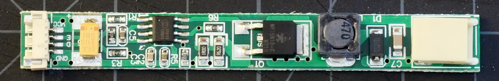

| unboosty | notes | dim range | ~cost |
|---|---|---|---|
| PWM-mode mod |
buck-down, 8-12V output 3 LED segments, 9.6V nominal |
9:1 | $15-20 |
|  | |||
|
|||
This kit is based on the same DF6113 boost controller IC [datasheet] as the "Simpleboost" kit, but arranged to use the inductor control as a low-side buck-down converter(!) The driver board expects to drive a constant-current LED string at between 8 and 12 volts such as the usual 9.6V constant-current strips that can be trimmed in groups of three LEDs. This board requires modification, such as the mod below, to work properly with a Thinkpad.
Update and Warning: Oh well, it seemed like it worked well enough. I've since gotten boards that flicker noticably with the slightest shift in input voltage, eg with processor load, regardless of the mod used. There's no correcting the problem no matter how fancy the mod--- it's a consequence of lobotomizing a boost controller to use it in buck mode.
Warning #2: As shipped, the boards I bought for evaluation were configured to put out far too much current for the 12.1"/255mm LED strips included. Do not try to test this kit without reading the modding page, or you'll probably damage the LED strip!
Above: Schematic of stock, unmodified "Unboosty" LED driver board
The PWM mod alters the driver board to use the Thinkpad's PWM brightness signal as a direct backlight switching control. The PWM frequency is 200Hz unless the OS changes it. If backlight flicker bothers you, definitely use one of my continuous-mode driver boards instead.
Above: Schematic of the Unboosty driver board modified for PWM-mode operation with a Thinkpad. Red marks new or altered components and connections, light gray shows removed connections and components.
Specific package recommendations above are known to fit, but feel free to mix whatever surface mount or through-hole components seem convenient. Resistor values should be 1% tolerance for best results.
Most Thinkpad modders want the trimmed version of the mod described in the next section. This is a less complicated process that leaves the original full-sized board in-tact for alternate uses.
After modding, the DIM input is now the board enable and the ENA input is now a PWM-compatible brightness input (they're mostly interchangeable really, but this arrangement is slightly preferable). The board will put out approximately 320mA at max brightness. Minimum brightness depends somewhat on PWM frequency; the PWM signal switches the chip enable and the converter has some turn-on lag. At the BIOS default of 60Hz, min brightness is about 36mA average for an adjustment range of 9:1.
If there's no space to stash the LED driver PCB somewhere in the lid (or if you simply find adding the extra board inelegant), the driver PCB can be trimmed to fit directly onto a stock Thinkpad inverter board. The circuit is the same as above, but we need to relocate some components.
Above: The full LED driver is too large to graft onto an existing Thinkpad inverter. Cut the PCB board at the dotted lines using diagonal cutters to make it small enough to fit. Some of the components on the cut-off sections will need to be relocated onto the remaining PCB.
The large orange 1µF tantalum input capacitor (C6), the 10µF ceramic output filter capacitor (C7), and 10Ω input decoupling resistor (R1) that were cut off must all be added back onto the remaining board section. Keep in mind the the tantalum capacitor is polarized!
Above: Trimmed LED driver board with completed PWM mod intended to be soldered onto a Thinkpad inverter. Mouse over the image to highlight and label the connection points.
The trimmed driver PCB is ready to be grafted onto an existing Thinkpad backlight inverter.
{kind=link}
{kind=link}
{kind=link}
{kind=link}